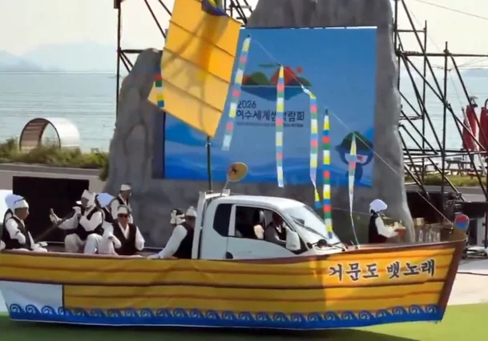
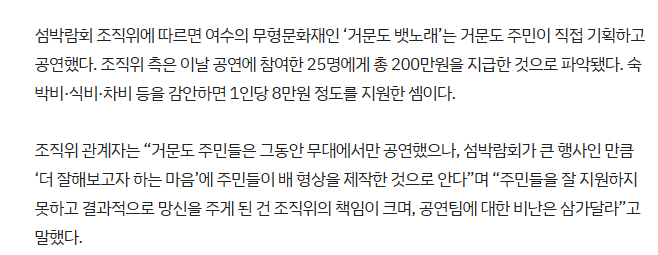

https://news.nate.com/view/20260920n01073
최근 여수 섬 박람회에서 있었던 거문도 뱃노래 행사에 대한 논란이 끊이질 않았는데
이거에 대한
조직위측의 답변이 올라와서 정보를 공유함.

단순히 결론만 말하자면 이 행사는
거문도 주민들이 직접 기획 하고 공연을 만든거고
조직위측은 그냥 식비,숙박비,차비 등 총 25명에게 200만원만 지급했다고함
왜 이렇게 난잡하게 되었나 하면
섬주민들이 무대에서만 공연을 했는데
이번에 섬 박람회가 무척 큰 행사라서
섬 주민들끼리 으쌰으쌰 하는 마음으로 직접 배 형상을 제작했다고함.
사실상, 섬주민들이 자기 돈 내고 만든거(....)
근데 직접 제작을 했지만 그.. 배 형상 퀄리티가 너무 안좋아서 행사비용 퀄리티 꿀꺽했다고 거문도 주민이
욕이라는 욕은 다먹는상태라서 조직위측이 주민들한테는 비난 하지 말아달라고 부탁까지함
저게 팀 전부 다 해서 8천만원 예산에 한팀당 최대 300만원 예산임..
그래서 뭐 예산안에서 쇼부 봤어야되니까 저렇게 나온게 이상할거 없지..